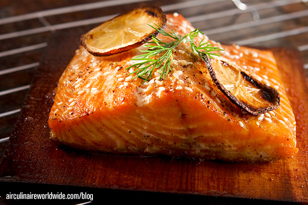

Air Fryer Salmon
Odin Recipes

Crispy Salmon
Ingredients
- 4 (6-ounce) salmon fillets
- 1 tablespoon olive oil
- 1 teaspoon garlic powder
- ½ teaspoon paprika
- ½ teaspoon salt
- ½ teaspoon black pepper
- Lemon wedges for serving
- Tartar sauce for serving
Steps
- Preheat the air fryer to 400°F.
- Rub each fillet with olive oil and season with garlic powder, paprika, salt and pepper. Place the salmon in the air fryer and air fry for 7-9 minutes, depending on the thickness of the salmon. Please note, time may vary between air fryers.
- Open the basket and check for desired doneness with a fork. You can return the salmon for another 1 or 2 minutes as necessary.